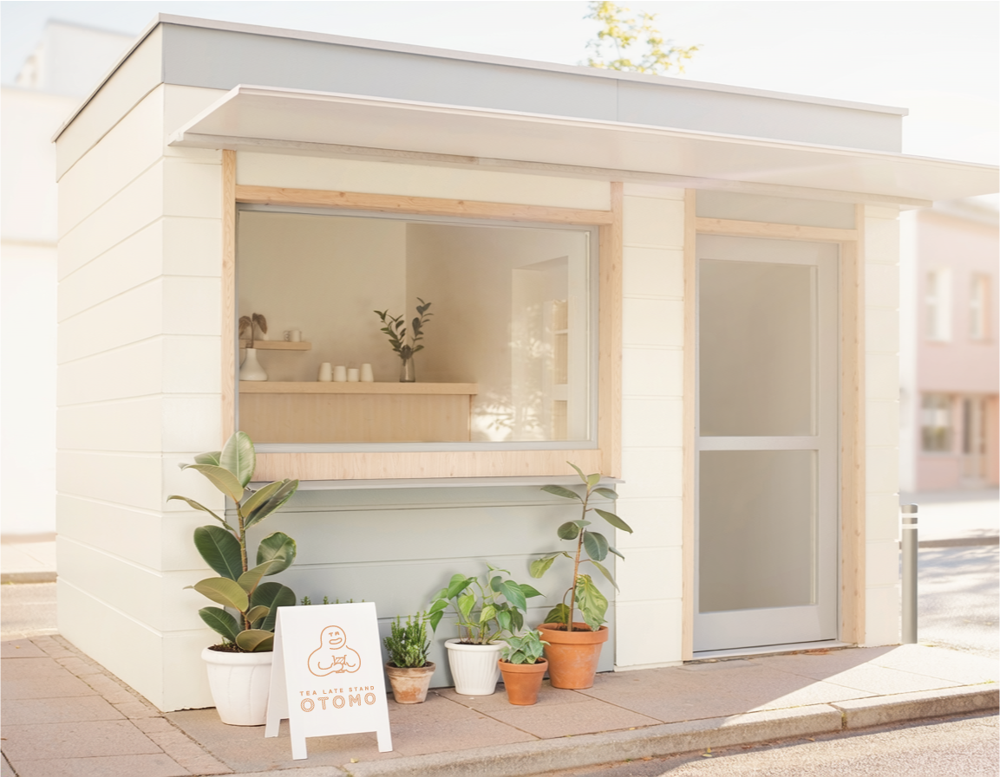

ABOUT
あなたの日常にOTOMOさせてください。
OTOMOは、皆様の生活にそっと寄り添うティーラテスタンドです。 暑い日も寒い日も、元気な日も落ち込んでいる日も、小さなご褒美が欲しい日だって、濃く煮出した茶葉をミルクが包み込むようにお客様をお迎えします。 お気軽にご来店ください。
ACCESS

- 住所
- 〒000-0000 東京都〇〇区〇〇町1-2-3
〇〇駅から徒歩5分 - 営業時間
- 10:00〜18:00
- 定休日
- 水曜日
あなたの日常にOTOMOさせてください。
OTOMOは、皆様の生活にそっと寄り添うティーラテスタンドです。 暑い日も寒い日も、元気な日も落ち込んでいる日も、小さなご褒美が欲しい日だって、濃く煮出した茶葉をミルクが包み込むようにお客様をお迎えします。 お気軽にご来店ください。
